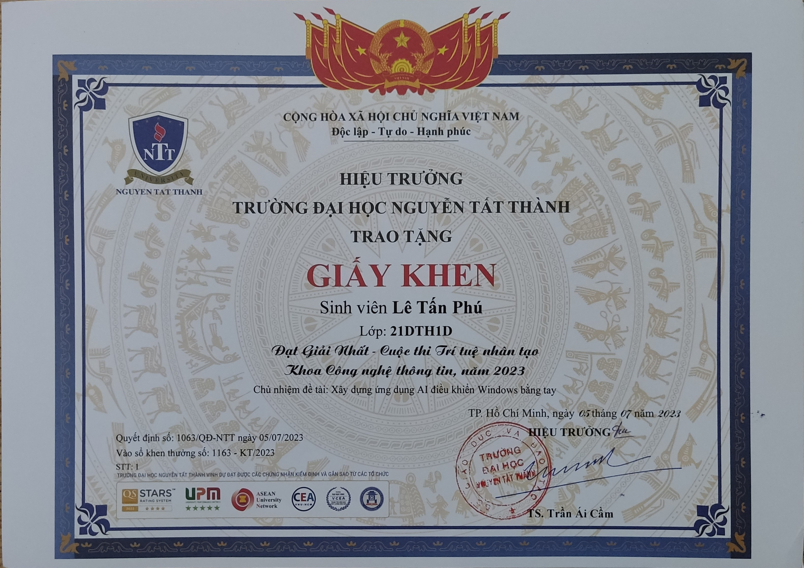
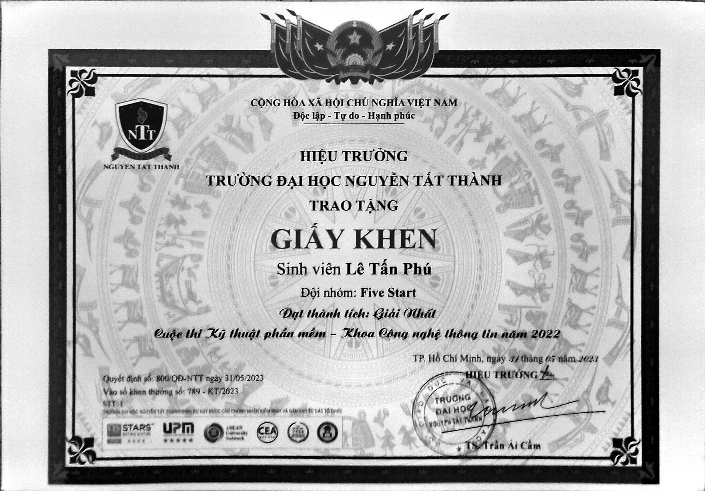
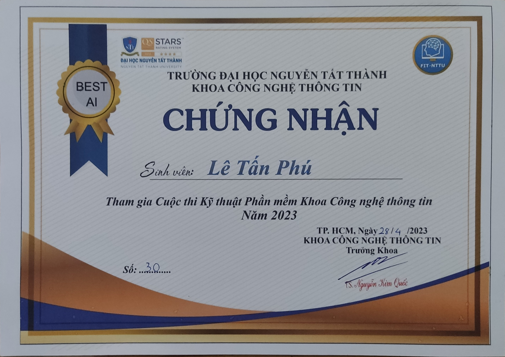
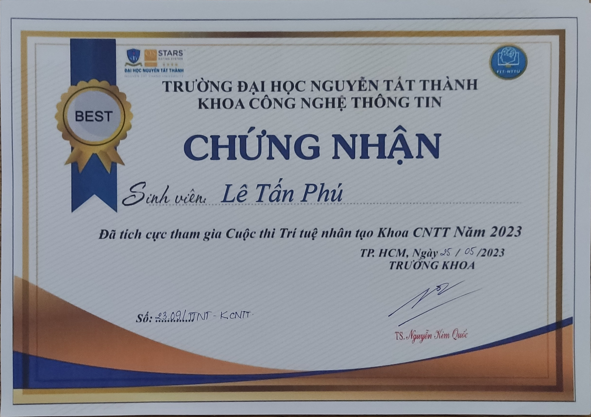
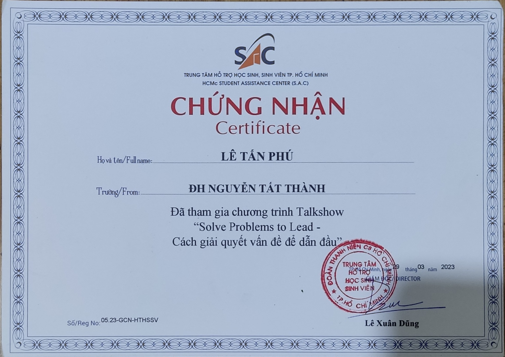

Học vấn / 2021 - 2025
Đại học Nguyễn Tất Thành
Cử nhân Công nghệ thông tin - Trí tuệ nhân tạo
3.75/4.00Tốt nghiệp loại Xuất sắc
PERSONAL PORTFOLIO 2026 / VI + EN
Định hướng AI Engineer
AI Agent.
LLM Systems.
Học hỏi. Xây dựng. Kiểm chứng.
Tốt nghiệp Công nghệ thông tin - Trí tuệ nhân tạo tại Đại học Nguyễn Tất Thành. Tôi quan tâm đến AI Agent/LLM, AI ứng dụng và phát triển hệ thống web có kiểm thử.
Hóc Môn, TP. Hồ Chí Minh / @LeTPhu ↗
01 Giới thiệu
Từ kinh nghiệm thực tập AI đến công việc đào tạo và vận hành dữ liệu, tôi đã tham gia xử lý dữ liệu/ETL, thử nghiệm mô hình ML/DL, chuẩn hóa hồ sơ và tổ chức học liệu.
Các dự án gần đây tập trung vào hệ thống CRM đa kênh, môi trường agent đa nhà cung cấp và nghiên cứu AI đa phương thức. Tôi chú trọng kiểm thử, ghi nhận kết quả và phân biệt số liệu thực nghiệm với benchmark tham khảo.
Xem CV A4 ↗Học vấn / 2021 - 2025
Cử nhân Công nghệ thông tin - Trí tuệ nhân tạo
02 Dự án & nghiên cứu
Từ AI ứng dụng đến hệ thống web và nghiên cứu học thuật. Chọn một dự án để xem phạm vi, công nghệ và kết quả ghi nhận.
CRM đa kênh & vận hành doanh nghiệp
Hệ thống CRM kết nối khách hàng, Social Inbox, công việc và nghiệp vụ doanh nghiệp/trường học.
Xem chi tiếtMôi trường AI Agent đa nhà cung cấp
Thực hành thiết lập môi trường agent trên VPS Ubuntu và điều phối model/provider trong cùng luồng làm việc.
Xem chi tiếtNhận diện sự kiện âm thanh
Khảo sát mô hình nhận diện sự kiện âm thanh, đối chiếu inference thử nghiệm với benchmark đã công bố.
Xem chi tiếtĐộ bền vững trong Multimodal VQA
Khảo sát độ bền vững khi thiếu modality, kết hợp modality dropout, knowledge distillation và quality gate.
Xem chi tiếtPrototype hệ thống hỗ trợ doanh nghiệp
Prototype quản lý ticket, asset, SLA và RBAC; gợi ý nhóm ticket bằng mô-đun phân loại rule-based.
Xem chi tiếtHỏi đáp văn bản hành chính tiếng Việt
Kết hợp OCR và RAG-LLM để trích xuất, truy vấn và hỏi đáp nội dung văn bản hành chính.
Xem chi tiếtPhát hiện & cảnh báo bạo lực thời gian thực
Dự án nhóm 4 thành viên dùng MobileNetV2 và Bi-LSTM để khai thác đặc trưng không gian, thời gian trong video.
Xem chi tiếtChưa có dự án trong nhóm này.
03 Hành trình
Trường Trung cấp Quốc tế Sài Gòn (SGI)
365 Ecosystem JSC (365 EJSC)
04 Kỹ năng
Mô hình học máy, xử lý ngôn ngữ, thị giác và âm thanh.
Luồng công cụ, điều phối provider và xử lý API.
Giao diện web, dịch vụ backend và kết nối thời gian thực.
Dữ liệu, môi trường triển khai và kiểm thử hệ thống.
Tiếng Anh: Đọc tài liệu kỹ thuật và giao tiếp cơ bản.
05 Thành tích
Các cột mốc trong CV
GPA 3.75/4.00 - Đại học Nguyễn Tất Thành.
Nhận học bổng trong 4/4 năm đại học.
Top 5 chung kết, Giải Khuyến khích và Top 5 sản phẩm phổ biến nhất.
Khoa Công nghệ thông tin - Đại học Nguyễn Tất Thành.
Thư viện minh chứng / 05
Giấy khen và chứng nhận từ các cuộc thi, hoạt động học tập. Chọn một ảnh để xem rõ toàn bộ nội dung.

Chưa tải được ảnh. Bạn có thể thử mở ảnh gốc.Giấy khen cho đề tài xây dựng ứng dụng AI điều khiển Windows bằng tay, do Lê Tấn Phú chủ nhiệm.

Chưa tải được ảnh. Bạn có thể thử mở ảnh gốc.Giấy khen trao cho Lê Tấn Phú, đội Five Start, trong cuộc thi Kỹ thuật phần mềm của Khoa Công nghệ thông tin.

Chưa tải được ảnh. Bạn có thể thử mở ảnh gốc.Chứng nhận Lê Tấn Phú tham gia Cuộc thi Kỹ thuật Phần mềm năm 2023.

Chưa tải được ảnh. Bạn có thể thử mở ảnh gốc.Chứng nhận tích cực tham gia Cuộc thi Trí tuệ nhân tạo của Khoa CNTT năm 2023.

Chưa tải được ảnh. Bạn có thể thử mở ảnh gốc.Chứng nhận tham gia talkshow “Cách giải quyết vấn đề để dẫn đầu”, dành cho Lê Tấn Phú.
Ảnh tư liệu được giữ nguyên, không chỉnh sửa nội dung.
06 Liên hệ
Bạn muốn trao đổi về AI ứng dụng, agent/LLM hoặc phát triển hệ thống web? Có thể liên hệ với tôi qua email hoặc GitHub.
Gửi email